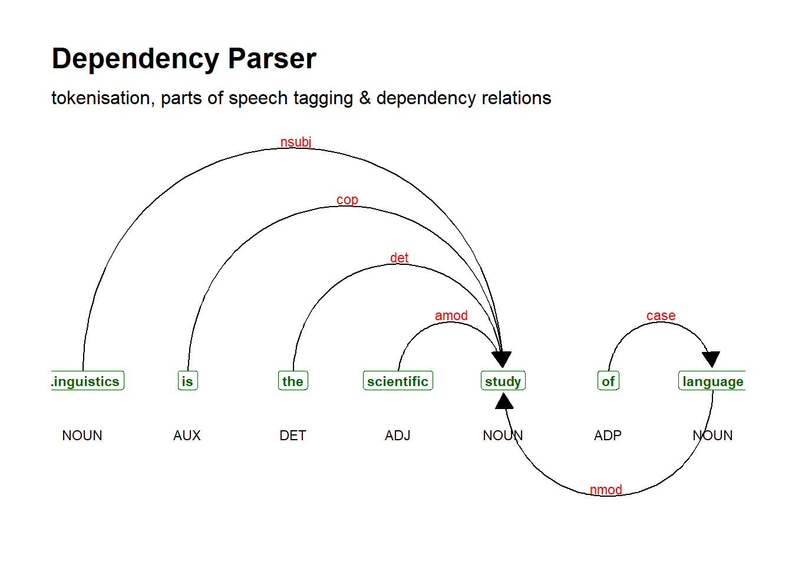

Part-of-Speech Tagging and Dependency Parsing with R
Martin Schweinberger
2022-10-28

Introduction

This tutorial introduces part-of-speech tagging and syntactic parsing using R. This tutorial is aimed at beginners and intermediate users of R with the aim of showcasing how to annotate textual data with part-of-speech (pos) tags and how to syntactically parse textual data using R. The aim is not to provide a fully-fledged analysis but rather to show and exemplify selected useful methods associated with pos-tagging and syntactic parsing. Another highly recommendable tutorial on part-of-speech tagging in R with UDPipe is available here and another tutorial on pos-tagging and syntactic parsing by Andreas Niekler and Gregor Wiedemann can be found here (see Wiedemann and Niekler 2017).
The entire R Notebook for the tutorial can be downloaded here.
If you want to render the R Notebook on your machine, i.e. knitting the
document to html or a pdf, you need to make sure that you have R and
RStudio installed and you also need to download the bibliography
file and store it in the same folder where you store the
Rmd file.
Here
is a link to an interactive and simplified version of this
tutorial on Google Colab. The interactive tutorial is based on
a Jupyter notebook of this tutorial. This interactive Jupyter notebook
allows you to execute code yourself and - if you copy the Jupyter
notebook - you can also change and edit the notebook, e.g. you can
change code and upload your own data.
Part-Of-Speech Tagging
Many analyses of language data require that we distinguish different parts of speech. In order to determine the word class of a certain word, we use a procedure which is called part-of-speech tagging (commonly referred to as pos-, pos-, or PoS-tagging). pos-tagging is a common procedure when working with natural language data. Despite being used quite frequently, it is a rather complex issue that requires the application of statistical methods that are quite advanced. In the following, we will explore different options for pos-tagging and syntactic parsing.
Parts-of-speech, or word categories, refer to the grammatical nature or category of a lexical item, e.g. in the sentence Jane likes the girl each lexical item can be classified according to whether it belongs to the group of determiners, verbs, nouns, etc. pos-tagging refers to a (computation) process in which information is added to existing text. This process is also called annotation. Annotation can be very different depending on the task at hand. The most common type of annotation when it comes to language data is part-of-speech tagging where the word class is determined for each word in a text and the word class is then added to the word as a tag. However, there are many different ways to tag or annotate texts.
Pos–tagging assigns part-of-speech tags to character strings (these represent mostly words, of course, but also encompass punctuation marks and other elements). This means that pos–tagging is one specific type of annotation, i.e. adding information to data (either by directly adding information to the data itself or by storing information in e.g. a list which is linked to the data). It is important to note that annotation encompasses various types of information such as pauses, overlap, etc. pos–tagging is just one of these many ways in which corpus data can be enriched. Sentiment Analysis, for instance, also annotates texts or words with respect to its or their emotional value or polarity.
Annotation is required in many machine-learning contexts because annotated texts are commonly used as training sets on which machine learning or deep learning models are trained that then predict, for unknown words or texts, what values they would most likely be assigned if the annotation were done manually. Also, it should be mentioned that by many online services offer pos-tagging (e.g. here or here.
When pos–tagged, the example sentence could look like the example below.
- Jane/NNP likes/VBZ the/DT girl/NN
In the example above, NNP stands for proper noun
(singular), VBZ stands for 3rd person singular present
tense verb, DT for determiner, and NN for
noun(singular or mass). The pos-tags used by the
openNLPpackage are the Penn
English Treebank pos-tags. A more elaborate description of the tags
can be found here which is summarised below:
Tag | Description | Examples |
CC | Coordinating conjunction | and, or, but |
CD | Cardinal number | one, two, three |
DT | Determiner | a, the |
EX | Existential there | There/EX was a party in progress |
FW | Foreign word | persona/FW non/FW grata/FW |
IN | Preposition or subordinating con | uh, well, yes |
JJ | Adjective | good, bad, ugly |
JJR | Adjective, comparative | better, nicer |
JJS | Adjective, superlative | best, nicest |
LS | List item marker | a., b., 1., 2. |
MD | Modal | can, would, will |
NN | Noun, singular or mass | tree, chair |
NNS | Noun, plural | trees, chairs |
NNP | Proper noun, singular | John, Paul, CIA |
NNPS | Proper noun, plural | Johns, Pauls, CIAs |
PDT | Predeterminer | all/PDT this marble, many/PDT a soul |
POS | Possessive ending | John/NNP 's/POS, the parentss/NNP '/POS distress |
PRP | Personal pronoun | I, you, he |
PRP$ | Possessive pronoun | mine, yours |
RB | Adverb | evry, enough, not |
RBR | Adverb, comparative | later |
RBS | Adverb, superlative | latest |
RP | Particle | RP |
SYM | Symbol | CO2 |
TO | to | to |
UH | Interjection | uhm, uh |
VB | Verb, base form | go, walk |
VBD | Verb, past tense | walked, saw |
VBG | Verb, gerund or present particip | walking, seeing |
VBN | Verb, past participle | walked, thought |
VBP | Verb, non-3rd person singular pr | walk, think |
VBZ | Verb, 3rd person singular presen | walks, thinks |
WDT | Wh-determiner | which, that |
WP | Wh-pronoun | what, who, whom (wh-pronoun) |
WP$ | Possessive wh-pronoun | whose, who (wh-words) |
WRB | Wh-adverb | how, where, why (wh-adverb) |
Assigning these pos-tags to words appears to be rather straight forward. However, pos-tagging is quite complex and there are various ways by which a computer can be trained to assign pos-tags. For example, one could use orthographic or morphological information to devise rules such as. . .
If a word ends in ment, assign the pos-tag
NN(for common noun)If a word does not occur at the beginning of a sentence but is capitalized, assign the pos-tag
NNP(for proper noun)
Using such rules has the disadvantage that pos-tags can only be assigned to a relatively small number of words as most words will be ambiguous – think of the similarity of the English plural (-(e)s) and the English 3rd person, present tense indicative morpheme (-(e)s), for instance, which are orthographically identical.Another option would be to use a dictionary in which each word is as-signed a certain pos-tag and a program could assign the pos-tag if the word occurs in a given text. This procedure has the disadvantage that most words belong to more than one word class and pos-tagging would thus have to rely on additional information.The problem of words that belong to more than one word class can partly be remedied by including contextual information such as. .
- If the previous word is a determiner and the following word is a
common noun, assign the pos-tag
JJ(for a common adjective)
This procedure works quite well but there are still better options.The best way to pos-tag a text is to create a manually annotated training set which resembles the language variety at hand. Based on the frequency of the association between a given word and the pos-tags it is assigned in the training data, it is possible to tag a word with the pos-tag that is most often assigned to the given word in the training data.All of the above methods can and should be optimized by combining them and additionally including pos–n–grams, i.e. determining a pos-tag of an unknown word based on which sequence of pos-tags is most similar to the sequence at hand and also most common in the training data.This introduction is extremely superficial and only intends to scratch some of the basic procedures that pos-tagging relies on. The interested reader is referred to introductions on machine learning and pos-tagging such as e.g.https://class.coursera.org/nlp/lecture/149.
There are several different R packages that assist with pos-tagging
texts (see Kumar and Paul 2016). In this tutorial,
we will use the udpipe (Wijffels 2021) and
the openNLP packages (Hornik 2019). Each
of these has advantages and shortcomings and it is advantageous to try
which result best matches one’s needs. That said, the
udpipe package is really great as it is easy to use, covers
a wide range of languages, is very flexible, and very accurate.
Preparation and session set up
This tutorial is based on R. If you have not installed R or are new to it, you will find an introduction to and more information how to use R here. For this tutorials, we need to install certain packages from an R library so that the scripts shown below are executed without errors. Before turning to the code below, please install the packages by running the code below this paragraph. If you have already installed the packages mentioned below, then you can skip ahead ignore this section. To install the necessary packages, simply run the following code - it may take some time (between 1 and 5 minutes to install all of the libraries so you do not need to worry if it takes some time).
# install packages
install.packages("dplyr")
install.packages("stringr")
install.packages("udpipe")
install.packages("flextable")
# install klippy for copy-to-clipboard button in code chunks
install.packages("remotes")
remotes::install_github("rlesur/klippy")Now that we have installed the packages, we activate them as shown below.
# load packages
library(dplyr)
library(stringr)
library(udpipe)
library(flextable)
# activate klippy for copy-to-clipboard button
klippy::klippy()Once you have installed R and RStudio and initiated the session by executing the code shown above, you are good to go.
POS-Tagging with UDPipe
UDPipe was developed at the Charles University in Prague and the
udpipe R package (Wijffels 2021) is an
extremely interesting and really fantastic package as it provides a very
easy and handy way for language-agnostic tokenization, pos-tagging,
lemmatization and dependency parsing of raw text in R. It is
particularly handy because it addresses and remedies major shortcomings
that previous methods for pos-tagging had, namely
- it offers a wide range of language models (64 languages at this point)
- it does not rely on external software (like, e.g., TreeTagger, that had to be installed separately and could be challenging when using different operating systems)
- it is really easy to implement as one only need to install and load
the
udpipepackage and download and activate the language model one is interested in - it allows to train and tune one’s own models rather easily
The available pre-trained language models in UDPipe are:
Languages | Models |
Afrikaans | afrikaans-afribooms |
Ancient Greek | ancient_greek-perseus, ancient_greek-proiel |
Arabic | arabic-padt |
Armenian | armenian-armtdp |
Basque | basque-bdt |
Belarusian | belarusian-hse |
bulgarian-btb | bulgarian-btb |
Buryat | buryat-bdt |
Catalan | catalan-ancora |
Chinese | chinese-gsd, chinese-gsdsimp, classical_chinese-kyoto |
Coptic | coptic-scriptorium |
Croatian | croatian-set |
Czech | czech-cac, czech-cltt, czech-fictree, czech-pdt |
Danish | danish-ddt |
Dutch | dutch-alpino, dutch-lassysmall |
English | english-ewt, english-gum, english-lines, english-partut |
Estonian | estonian-edt, estonian-ewt |
Finnish | finnish-ftb, finnish-tdt |
French | french-gsd, french-partut, french-sequoia, french-spoken |
Galician | galician-ctg, galician-treegal |
German | german-gsd, german-hdt |
Gothic | gothic-proiel |
Greek | greek-gdt |
Hebrew | hebrew-htb |
Hindi | hindi-hdtb |
Hungarian | hungarian-szeged |
Indonesian | indonesian-gsd |
Irish Gaelic | irish-idt |
Italian | italian-isdt, italian-partut, italian-postwita, italian-twittiro, italian-vit |
Japanese | japanese-gsd |
Kazakh | kazakh-ktb |
Korean | korean-gsd, korean-kaist |
Kurmanji | kurmanji-mg |
Latin | latin-ittb, latin-perseus, latin-proiel |
Latvian | latvian-lvtb |
Lithuanian | lithuanian-alksnis, lithuanian-hse |
Maltese | maltese-mudt |
Marathi | marathi-ufal |
North Sami | north_sami-giella |
Norwegian | norwegian-bokmaal, norwegian-nynorsk, norwegian-nynorsklia |
Old Church Slavonic | old_church_slavonic-proiel |
Old French | old_french-srcmf |
Old Russian | old_russian-torot |
Persian | persian-seraji |
Polish | polish-lfg, polish-pdb, polish-sz |
Portugese | portuguese-bosque, portuguese-br, portuguese-gsd |
Romanian | romanian-nonstandard, romanian-rrt |
Russian | russian-gsd, russian-syntagrus, russian-taiga |
Sanskrit | sanskrit-ufal |
Scottish Gaelic | scottish_gaelic-arcosg |
Serbian | serbian-set |
Slovak | slovak-snk |
Slovenian | slovenian-ssj, slovenian-sst |
Spanish | spanish-ancora, spanish-gsd |
Swedish | swedish-lines, swedish-talbanken |
Tamil | tamil-ttb |
Telugu | telugu-mtg |
Turkish | turkish-imst |
Ukrainian | ukrainian-iu |
Upper Sorbia | upper_sorbian-ufal |
Urdu | urdu-udtb |
Uyghur | uyghur-udt |
Vietnamese | vietnamese-vtb |
Wolof | wolof-wtb |
The udpipe R package also allows you to easily train your own models,
based on data in CONLL-U format, so that you can use these for your own
commercial or non-commercial purposes. This is described in the other
vignette of this package which you can view by the command
vignette("udpipe-train", package = "udpipe")
To download any of these models, we can use the
udpipe_download_model function. For example, to download
the english-ewt model, we would use the call:
m_eng <- udpipe::udpipe_download_model(language = "english-ewt").
We start by loading a text
# load text
text <- readLines("https://slcladal.github.io/data/testcorpus/linguistics06.txt", skipNul = T) %>%
str_squish() %>%
.[1]
# inspect
text## [1] "Linguistics also deals with the social, cultural, historical and political factors that influence language, through which linguistic and language-based context is often determined. Research on language through the sub-branches of historical and evolutionary linguistics also focus on how languages change and grow, particularly over an extended period of time."Now that we have a text that we can work with, we will download a pre-trained language model.
# download language model
m_eng <- udpipe::udpipe_download_model(language = "english-ewt")If you have downloaded a model once, you can also load the model directly from the place where you stored it on your computer. In my case, I have stored the model in a folder called udpipemodels
# load language model from your computer after you have downloaded it once
m_eng <- udpipe_load_model(file = here::here("udpipemodels", "english-ewt-ud-2.5-191206.udpipe"))We can now use the model to annotate out text.
# tokenise, tag, dependency parsing
text_anndf <- udpipe::udpipe_annotate(m_eng, x = text) %>%
as.data.frame() %>%
dplyr::select(-sentence)
# inspect
head(text_anndf, 10)## doc_id paragraph_id sentence_id token_id token lemma upos xpos
## 1 doc1 1 1 1 Linguistics Linguistic NOUN NNS
## 2 doc1 1 1 2 also also ADV RB
## 3 doc1 1 1 3 deals deal NOUN NNS
## 4 doc1 1 1 4 with with ADP IN
## 5 doc1 1 1 5 the the DET DT
## 6 doc1 1 1 6 social social ADJ JJ
## 7 doc1 1 1 7 , , PUNCT ,
## 8 doc1 1 1 8 cultural cultural ADJ JJ
## 9 doc1 1 1 9 , , PUNCT ,
## 10 doc1 1 1 10 historical historical ADJ JJ
## feats head_token_id dep_rel deps misc
## 1 Number=Plur 3 compound <NA> <NA>
## 2 <NA> 3 advmod <NA> <NA>
## 3 Number=Plur 0 root <NA> <NA>
## 4 <NA> 13 case <NA> <NA>
## 5 Definite=Def|PronType=Art 13 det <NA> <NA>
## 6 Degree=Pos 13 amod <NA> SpaceAfter=No
## 7 <NA> 8 punct <NA> <NA>
## 8 Degree=Pos 6 conj <NA> SpaceAfter=No
## 9 <NA> 10 punct <NA> <NA>
## 10 Degree=Pos 6 conj <NA> <NA>It can be useful to extract only the words and their pos-tags and convert them back into a text format (rather than a tabular format).
tagged_text <- paste(text_anndf$token, "/", text_anndf$xpos, collapse = " ", sep = "")
# inspect tagged text
tagged_text## [1] "Linguistics/NNS also/RB deals/NNS with/IN the/DT social/JJ ,/, cultural/JJ ,/, historical/JJ and/CC political/JJ factors/NNS that/WDT influence/VBP language/NN ,/, through/IN which/WDT linguistic/NN and/CC language/NN -/HYPH based/VBN context/NN is/VBZ often/RB determined/JJ ./. Research/VB on/IN language/NN through/IN the/DT sub-branches/NNS of/IN historical/JJ and/CC evolutionary/JJ linguistics/NNS also/RB focus/RB on/IN how/WRB languages/NNS change/VBP and/CC grow/VBP ,/, particularly/RB over/IN an/DT extended/JJ period/NN of/IN time/NN ./."POS-Tagging non-English texts
We can apply the same method for annotating, e.g. adding pos-tags, to
other languages. For this, we could train our own model, or, we can use
one of the many pre-trained language models that udpipe
provides.
Let us explore how to do this by using example texts from different languages, here from German and Spanish (but we could also annotate texts from any of the wide variety of languages for which UDPipe provides pre-trained models.
We begin by loading a German and a Dutch text.
# load texts
gertext <- readLines("https://slcladal.github.io/data/german.txt")
duttext <- readLines("https://slcladal.github.io/data/dutch.txt")
# inspect texts
gertext; duttext## [1] "Sprachwissenschaft untersucht in verschiedenen Herangehensweisen die menschliche Sprache."## [1] "Taalkunde, ook wel taalwetenschap of linguïstiek, is de wetenschappelijke studie van de natuurlijke talen."Next, we install the pre-trained language models.
# download language model
m_ger <- udpipe::udpipe_download_model(language = "german-gsd")
m_dut <- udpipe::udpipe_download_model(language = "dutch-alpino")Or we load them from our machine (if we have downloaded and saved them before).
# load language model from your computer after you have downloaded it once
m_ger <- udpipe::udpipe_load_model(file = here::here("udpipemodels", "german-gsd-ud-2.5-191206.udpipe"))
m_dut <- udpipe::udpipe_load_model(file = here::here("udpipemodels", "dutch-alpino-ud-2.5-191206.udpipe"))Now, pos-tag the German text.
# tokenise, tag, dependency parsing of german text
ger_pos <- udpipe::udpipe_annotate(m_ger, x = gertext) %>%
as.data.frame() %>%
dplyr::summarise(postxt = paste(token, "/", xpos, collapse = " ", sep = "")) %>%
dplyr::pull(unique(postxt))
# inspect
ger_pos## [1] "Sprachwissenschaft/NN untersucht/VVFIN in/APPR verschiedenen/ADJA Herangehensweisen/NN die/ART menschliche/NN Sprache/NN ./$."And finally, we also pos-tag the Dutch text.
# tokenise, tag, dependency parsing of german text
nl_pos <- udpipe::udpipe_annotate(m_dut, x = duttext) %>%
as.data.frame() %>%
dplyr::summarise(postxt = paste(token, "/", xpos, collapse = " ", sep = "")) %>%
dplyr::pull(unique(postxt))
# inspect
nl_pos## [1] "Taalkunde/N|soort|ev|basis|zijd|stan ,/LET ook/BW wel/BW taalwetenschap/N|soort|ev|basis|zijd|stan of/VG|neven linguïstiek/N|soort|ev|basis|zijd|stan ,/LET is/WW|pv|tgw|ev de/LID|bep|stan|rest wetenschappelijke/ADJ|prenom|basis|met-e|stan studie/N|soort|ev|basis|zijd|stan van/VZ|init de/LID|bep|stan|rest natuurlijke/ADJ|prenom|basis|met-e|stan talen/N|soort|mv|basis ./LET"Dependency Parsing Using UDPipe
In addition to pos-tagging, we can also generate plots showing the
syntactic dependencies of the different constituents of a sentence. For
this, we generate an object that contains a sentence (in this case, the
sentence Linguistics is the scientific study of language), and
we then plot (or visualize) the dependencies using the
textplot_dependencyparser function.
# parse text
sent <- udpipe::udpipe_annotate(m_eng, x = "Linguistics is the scientific study of language") %>%
as.data.frame()
# inspect
head(sent)## doc_id paragraph_id sentence_id
## 1 doc1 1 1
## 2 doc1 1 1
## 3 doc1 1 1
## 4 doc1 1 1
## 5 doc1 1 1
## 6 doc1 1 1
## sentence token_id token
## 1 Linguistics is the scientific study of language 1 Linguistics
## 2 Linguistics is the scientific study of language 2 is
## 3 Linguistics is the scientific study of language 3 the
## 4 Linguistics is the scientific study of language 4 scientific
## 5 Linguistics is the scientific study of language 5 study
## 6 Linguistics is the scientific study of language 6 of
## lemma upos xpos feats
## 1 Linguistic NOUN NNS Number=Plur
## 2 be AUX VBZ Mood=Ind|Number=Sing|Person=3|Tense=Pres|VerbForm=Fin
## 3 the DET DT Definite=Def|PronType=Art
## 4 scientific ADJ JJ Degree=Pos
## 5 study NOUN NN Number=Sing
## 6 of ADP IN <NA>
## head_token_id dep_rel deps misc
## 1 5 nsubj <NA> <NA>
## 2 5 cop <NA> <NA>
## 3 5 det <NA> <NA>
## 4 5 amod <NA> <NA>
## 5 0 root <NA> <NA>
## 6 7 case <NA> <NA>We now generate the plot.
# generate dependency plot
dplot <- textplot::textplot_dependencyparser(sent, size = 3)
# show plot
dplot
That’s it for this tutorial. We hope that you have enjoyed this tutorial and learned how to annotate texts using language models and perform pos-tagging and dependency parsing of English texts as well as texts in other languages.
Citation & Session Info
Schweinberger, Martin. 2022. Part-of-Speech Tagging and Dependency Parsing with R. Brisbane: The University of Queensland. url: https://slcladal.github.io/postag.html (Version 2022.10.28).
@manual{schweinberger2022postag,
author = {Schweinberger, Martin},
title = {Part-of-Speech Tagging and Dependency Parsing with R},
note = {https://slcladal.github.io/postag.html},
year = {2022},
organization = "The University of Queensland, School of Languages and Cultures},
address = {Brisbane},
edition = {2022.10.28}
}sessionInfo()## R version 4.2.1 RC (2022-06-17 r82510 ucrt)
## Platform: x86_64-w64-mingw32/x64 (64-bit)
## Running under: Windows 10 x64 (build 19043)
##
## Matrix products: default
##
## locale:
## [1] LC_COLLATE=German_Germany.utf8 LC_CTYPE=German_Germany.utf8
## [3] LC_MONETARY=German_Germany.utf8 LC_NUMERIC=C
## [5] LC_TIME=German_Germany.utf8
##
## attached base packages:
## [1] stats graphics grDevices utils datasets methods base
##
## other attached packages:
## [1] udpipe_0.8.9 stringr_1.4.1 dplyr_1.0.9 flextable_0.7.3
##
## loaded via a namespace (and not attached):
## [1] ggrepel_0.9.1 Rcpp_1.0.9 here_1.0.1 lattice_0.20-45
## [5] tidyr_1.2.0 assertthat_0.2.1 rprojroot_2.0.3 digest_0.6.29
## [9] utf8_1.2.2 ggforce_0.3.4 R6_2.5.1 evaluate_0.16
## [13] ggplot2_3.3.6 highr_0.9 pillar_1.8.1 gdtools_0.2.4
## [17] rlang_1.0.4 uuid_1.1-0 rstudioapi_0.14 data.table_1.14.2
## [21] jquerylib_0.1.4 Matrix_1.4-1 textplot_0.2.2 klippy_0.0.0.9500
## [25] rmarkdown_2.16 labeling_0.4.2 igraph_1.3.4 polyclip_1.10-0
## [29] munsell_0.5.0 compiler_4.2.1 xfun_0.32 pkgconfig_2.0.3
## [33] systemfonts_1.0.4 base64enc_0.1-3 htmltools_0.5.3 tidyselect_1.1.2
## [37] gridExtra_2.3 tibble_3.1.8 graphlayouts_0.8.1 viridisLite_0.4.1
## [41] fansi_1.0.3 withr_2.5.0 MASS_7.3-57 grid_4.2.1
## [45] jsonlite_1.8.0 gtable_0.3.0 lifecycle_1.0.1 DBI_1.1.3
## [49] magrittr_2.0.3 scales_1.2.1 zip_2.2.0 cli_3.3.0
## [53] stringi_1.7.8 cachem_1.0.6 farver_2.1.1 viridis_0.6.2
## [57] xml2_1.3.3 bslib_0.4.0 ellipsis_0.3.2 generics_0.1.3
## [61] vctrs_0.4.1 tools_4.2.1 glue_1.6.2 officer_0.4.3
## [65] tweenr_2.0.1 purrr_0.3.4 ggraph_2.0.6 fastmap_1.1.0
## [69] yaml_2.3.5 colorspace_2.0-3 tidygraph_1.2.2 knitr_1.40
## [73] sass_0.4.2